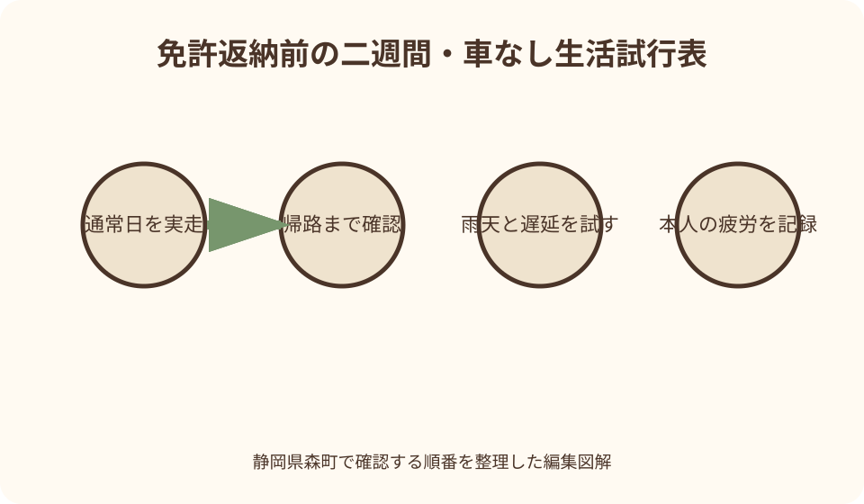
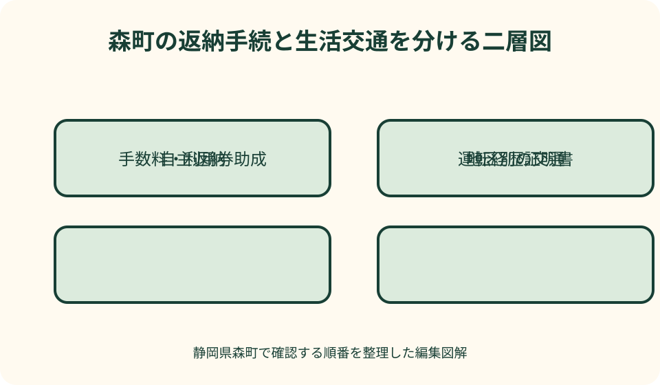

交通・外出・生活動線｜最終確認 2026-08-10
静岡県森町で運転免許を自主返納する前後｜移動手段を先に試す
運転免許の自主返納は警察で行う手続ですが、生活上の難しさは返納後の移動に現れます。静岡県森町では、町営バス、天竜浜名湖鉄道、民間路線バス、一般タクシーに加え、対象地区を定めた地域タクシー、公共交通利用券助成、条件のある移動支援などを確認できます。ただし、どれか一つが自家用車の全用途を置き換えるとは限りません。返納日を決める前に、通院・買い物・金融・交流の動線を実際に試す順で整理します。

編集イラスト返納日より先に生活の移動表を作る
自主返納の話を始めると、家族は手続日を先に決めがちです。しかし、本人にとって重要なのは、返納翌週から病院、薬局、買い物、金融機関、集まりへどう行くかです。まず普段の外出を一か月分思い出します。
移動表は、目的地、曜日、予約時刻、滞在時間、荷物、付き添い、帰宅希望時刻を一行にします。往路だけ送れる、帰路だけ迎えられるという家族の条件も書き、空欄を『誰かが何とかする』で埋めません。
毎週の通院と、年に数回の検査、急な受診は同じ交通手段では組めない場合があります。定例外出、予約外出、当日発生の三つへ分け、最も難しい用事から代替手段を試します。
試行中は本人が運転できる状態でも、自分で運転せずに予定を一度完結させます。時刻表を読めるか、停留所まで歩けるか、予約電話ができるか、帰りの待ち時間に耐えられるかを実際に確かめます。
自主返納は運転経歴証明書と別に確認する
自主返納は、有効な運転免許を本人の申請により取り消す手続です。静岡県警の公式案内で、全部返納、一部取消し、本人申請、代理申請など今回に関係する項目を確認し、家族だけで可否を決めません。
返納手続が完了した後は、その免許で自動車等を運転できません。手続場所まで自分の車で行く計画なら、帰路を誰が運転するか、車をどこへ置くかを先に決め、返納後に本人が運転する余地を残さないようにします。
運転経歴証明書は、自主返納等の経歴を示す別の証明書です。氏名、住所、写真、運転経歴などが記載され、『自動車等の運転はできません』と明記されるため、免許証の代わりに運転できるカードではありません。
静岡県警は、運転経歴情報をマイナンバーカードへ記録する方法も案内しています。カード型証明書、記録、両方を持つ方法で手数料や持参物が異なるため、古い説明ではなく申請時点の公式ページを読みます。
運転経歴証明書の申請条件を本人別に見る
運転経歴証明書は、自主返納と同時に申し込む場合と、後日申し込む場合で必要物や窓口が違うことがあります。失効後の申請、県外で返納した人、代理人による申請にも条件があるため、本人の経過を時系列にします。
確認票には、免許の有効期限、返納予定日、現在の住所、返納場所、証明書の希望形態、代理の要否を書きます。『高齢だから申請できる』という一項目だけで、手続方法を確定しません。
県警ページには申請可能な期間、受付場所、時間、持参物、写真が必要になる場合、手数料が掲載されています。数値は改定され得るため、予約や来庁の直前に再読し、印刷日を控えます。
本人が窓口へ行くのが難しいときは、代理申請ができる場面とできない場面を警察へ確認します。家族関係が分かるだけで足りるとは限らず、委任関係や本人確認書類を自己流で準備しません。
森町の手数料助成は証明書取得後に照合する
森町は、町内在住の一定年齢以上で運転経歴証明書の交付等を受けた人を対象に、交付等手数料の助成を案内しています。警察の返納手続と町の助成申請は担当も根拠も異なる別の流れです。
対象年齢、住所、申請期間、必要書類、助成対象となる手数料は、森町の現行ページで確認します。県警で証明書を申し込めたことだけで、町の助成も自動的に振り込まれるとは考えません。
領収を確認できる書類、運転経歴証明書等、振込先など、町が示す持参物を返納前から一覧にしておくと、証明書取得後の取り忘れを防げます。原本提示か写し提出かも窓口へ尋ねます。
助成金は移動手段そのものではありません。手数料負担が軽くなっても、翌日の通院便や買い物の帰路は別に設計する必要があります。証明書申請と生活交通の試行を並行して進めます。

公共交通利用券助成は対象と購入順を確認する
森町の公共交通利用券助成は、一定年齢以上の町民や、一定年齢以上で運転経歴証明書の交付を受けた町民を対象に案内されています。年齢だけでなく証明書の要否が区分で異なるため、本人がどちらに当たるかを見ます。
対象となる利用券には、町営バス、天竜浜名湖鉄道、タクシークーポン、民間バスなど複数の種類が案内されています。すべてを同じ販売場所で買えるわけではなく、購入先と助成申請を分けて確認します。
購入日からの申請期限や年度の上限、他の助成との関係は更新される可能性があります。先に大量購入するのではなく、試行期間で実際に使う交通を確かめ、現年度の条件に沿って購入記録を残します。
利用券を持っていても、希望時刻の便、乗降場所、予約枠が確保されるとは限りません。費用の助成と運行の成立を分離し、時刻表、予約方法、営業区域、帰路を各運行者へ確認します。
町営バスは路線・予約便・帰り便を見る
森町営バスは大河内線と吉川線が案内され、どちらにも事前予約が必要な便があります。停留所名だけを見ず、利用日、運行日、行きの便、帰りの便、予約が必要かを最新時刻表で一組にします。
自宅から停留所までの距離、坂、横断歩道、待つ場所の屋根や椅子も確認します。車では数分の場所でも、杖や荷物を持つ本人が歩く時間は異なり、雨天には利用できないと感じることがあります。
病院予約に間に合う往路があっても、診察の終了時刻が読めず帰り便を逃すことがあります。一本後の便、一般タクシー、家族の迎えを先に決め、待ち時間に休める場所も確認します。
時刻表の固定時刻をこの記事へ写すのではなく、毎回町公式の更新日を見ます。予約期限、運休日、運行問い合わせ先が変わっていないかを確認し、家族が代理で予約できるかも運行側へ尋ねます。
地域タクシーは町内一律の制度ではない
森町の地域タクシーは、一宮地区と園田地区について公式案内があります。対象地区の住民が、自宅と決められた指定目的地の間を移動する仕組みで、町内の任意の住所から任意の場所へ行ける制度とは限りません。
利用には事前の利用者登録とチケット申請が必要と案内されています。利用したい当日に初めて電話して必ず乗れるとは考えず、登録完了までの期間、予約方法、乗車時に必要な物を現行案内で確認します。
指定目的地には駅、バス停、医療、買い物、公共施設など生活に関係する場所が設定されますが、行きたい個別店舗や医院が含まれるかは一覧で照合します。目的地間を自由に乗り継げるとも決めません。
運行日・時間、料金、予約締切、同乗、キャンセルの扱いは変更され得ます。本人が電話予約を難しく感じる場合は、家族による予約の可否、予定変更時の連絡方法を運行窓口へ確認します。
鉄道・民間バス・一般タクシーをつなぐ
森町南部には天竜浜名湖鉄道の駅があり、遠州森町を発着する民間路線バスもあります。自宅から駅やバス停まで、降車後から目的地までを含めて、一回の移動として所要時間を測ります。
鉄道や路線バスは、運行本数だけでなく乗換え時間が課題になります。診療予約や窓口の受付時間へ間に合っても、帰りの接続が長い場合があるため、往復を同じ日に検索します。
一般タクシーは玄関から目的地へ行きやすい一方、予約状況、迎車、料金は日時や距離で変わります。定期通院なら同じ曜日・時間帯で数回予約を試し、急な呼出し時の代案も持ちます。
地域タクシーの対象外地区でも、一般タクシー、鉄道、民間バス、町営バスの組合せを検討できます。ただし乗継ぎごとに歩行と待機が増えるため、本人の体力と荷物を試行で確かめます。
通院は予約時刻より帰宅までを設計する
通院表には診療科、予約時刻、平均的な終了幅、検査、会計、薬局、付き添いの要否を書きます。病院へ着く一便だけでなく、薬を受け取った後に帰宅できる時間まで追います。
公立森町病院の患者バスなど医療機関が案内する交通は、路線、利用条件、運行日を病院公式で確認します。患者であれば町内のどこでもいつでも送迎されるという前提を置きません。
受診が長引いて予定便に乗れない場合は、病院内の連絡場所、タクシーを呼ぶ方法、家族へ知らせる順を決めます。スマートフォンだけに連絡先を入れず、紙のカードを財布へ入れます。
急な体調変化は、通常の通院交通で対応する場面とは限りません。緊急性の判断をこの記事で行わず、医療機関や救急の公的な案内に従い、予約便を待つことを優先しません。
買い物は頻度・量・保存方法を変える
車で週一回まとめ買いしていた人がバスへ替えると、持てる重さや冷蔵品の時間が変わります。買い物回数を分ける、配達を使う、重い物だけ家族へ頼むなど、交通と購入方法を一緒に見直します。
店舗送迎や宅配があっても、対象地域、注文金額、曜日、支払方法、玄関までの運搬は店舗ごとに異なります。広告のサービス名だけで利用可能と判断せず、住所と必要品を伝えて確認します。
地域タクシーの指定目的地に店舗があっても、買い物後にすぐ帰れる予約が確保されるとは限りません。荷物を持って待てる場所、予約変更、冷蔵品を避ける時間帯を試します。
家族の買い物代行は便利ですが、本人の外出・交流をすべて減らすことにもなり得ます。本人が店へ行く日と、代行する日を分け、移動負担と生活の楽しみを両方記録します。
家族送迎は善意ではなく予定表にする
『必要なら呼んで』という約束は、本人が遠慮して使えないことがあります。曜日、送れる時間帯、連絡期限、往路だけか往復かを家族ごとに表へし、頼めない日を先に示します。
一人の家族へ集中すると、仕事、育児、介護との両立が崩れます。兄弟姉妹、近居の親族、配偶者で役割を分け、公共交通・タクシーで代替する費用も家族会議で決めます。
送迎車への乗降が難しい場合は、段差、手すり、荷物、車いす等の扱いを確認します。家族だから介助できると決めず、必要なら福祉・介護の相談先へ移動支援を含めて相談します。
返納手続の日も送迎試行の一日です。警察窓口まで誰が同行し、待ち時間をどう過ごし、帰りに車を誰が運転するかを決めると、返納直後の無免許運転を防げます。
条件付きの移動支援を過大評価しない
森町は、公共交通以外の交通手段として、送迎援助、障害のある人へのタクシー券、病院患者バスなどの入口を案内しています。年齢、身体状況、会員登録、行先などの条件は制度ごとに違います。
社会福祉協議会等によるボランティア移動支援も、利用対象、乗降能力、町内親族の有無、予約、行先などが定められる場合があります。免許返納者なら誰でも毎日利用できるとは扱いません。
ボランティアや会員間支援は、担い手の都合で希望日時に調整できない場合があります。定例通院の唯一の手段にする前に、数回利用して予約の流れとキャンセル時の代案を確認します。
介助が必要な人は、単なる車両確保では解決しないことがあります。玄関から車、車から受付までの支援を分け、ケアマネジャーや町の福祉窓口など本人に合う相談先へつなぎます。
返納前の二週間試行を実施する
試行期間は最低でも平日と休日、晴天とできれば雨天の違いが見える日程にします。本人は車を運転せず、家族も予定外の救済をすぐ出さず、用意した交通手段で往復できるか確かめます。
第一週は、通院、買い物、金融、知人訪問など通常の予定を一つずつ試します。乗車時刻、歩いた距離、待ち時間、費用、疲労、予約の難しさを本人の言葉で五段階評価します。
第二週は、雨、便の遅れ、診察延長、家族が送れない日を想定します。一本後の便、タクシー、延期、宅配へ切り替え、誰へ連絡すれば帰宅できるかを実地で確認します。
試行結果で困った部分が見つかっても、返納を急がせる材料にも、運転継続を正当化する材料にも単純化しません。交通の追加、予定変更、住まい方を含む改善案を本人と話します。

自家用車と鍵の扱いを別に決める
免許を返納しても、車の所有、保険、税、駐車場契約、売却は自動では変わりません。家族が乗る、売る、廃車する、一定期間保管する選択を分け、名義と費用を確認します。
本人が習慣で鍵を持ち出さないよう、返納後の鍵の保管場所を家族で決めます。運転経歴証明書を免許証と取り違えないよう、財布の収納位置や車内の書類も整理します。
家族が車を引き継ぐ場合は、任意保険の運転者範囲や使用目的、車検、保管場所を契約先へ確認します。名義人が返納しただけで、他の家族が自動的に補償されるとは限りません。
車を手放す判断は、返納日と同日に急いで契約する必要はありません。試行期間中の送迎や荷物運搬に家族が使う可能性も含め、本人の意思と維持費を確認して別の案件として進めます。
運転経歴証明書の提示サービスを都度確認する
静岡県警は、自主返納者等サポート事業を案内し、運転経歴証明書等の提示による店舗・自治体のサービスを掲載しています。参加店や内容は変わり得るため、利用日の一覧を確認します。
サポート店のステッカーがあっても、対象者、提示時期、割引対象商品、他の割引との併用条件は店舗ごとに違います。会計後ではなく注文・購入前に証明書を提示し、条件を尋ねます。
サービスがあることは、返納後の移動を確保するものではありません。割引店まで行く交通、帰路、荷物を別に計画し、特典のために遠い店舗を選んで負担を増やさないようにします。
マイナンバーカードへの運転経歴情報記録を利用する場合は、提示方法が当該サービスで認められるか、県警の現行案内と店舗で確認します。過去の交付済シールの説明をそのまま使いません。
良い点
森町には、免許返納後の移動を考える複数の入口があります。町営バス、鉄道、民間バス、タクシー、対象地区の地域タクシー、条件付き支援を目的別に組み合わせられることは大きな利点です。
運転経歴証明書の交付等手数料助成と公共交通利用券助成が別に案内されているため、証明書取得時の費用と、日常移動の費用を分けて確認できます。対象条件を満たす人には計画の助けになります。
返納前に試行期間を設けると、本人が『車がないと無理』と感じる場面を具体化できます。漠然と説得するのではなく、停留所までの坂、予約電話、診察後の待ち時間を一つずつ改善できます。
家族送迎を予定表にすると、本人の遠慮と家族の思い込みを減らせます。公共交通が使える用事、家族が担う用事、延期できる用事を分ければ、一人へ負担が集中しにくくなります。
注文したい点
利用者の立場では、返納手続、証明書、手数料助成、利用券助成、町営バス、地域タクシーが別ページに分かれています。本人の住所と年齢から確認順を示す町の統合案内があると準備しやすくなります。
地域タクシーは対象地区と指定目的地が明確である一方、対象外地区の住民は自分の選択肢を探し直す必要があります。地区別に使える交通と条件を並べた現行地図があると比較が容易です。
町営バスには予約が必要な便があるため、紙の時刻表だけでは初めての利用者が迷う場合があります。予約する便、電話する期限、帰り便の取り方を例示した案内を家族も使える形で期待します。
移動支援は制度名が似ていても、対象や介助範囲が異なります。返納者向け、障害のある人向け、通院向け、会員相互支援を一括りにせず、利用できない場合の次の相談先も示してほしいところです。
代案・結論
町営バスだけで往復できない日は、鉄道・民間バスへの接続、地域タクシー、一般タクシー、家族送迎を組み合わせます。便がない時間は、予約時刻や買い物日を変えることも交通手段の一部です。
地域タクシーの対象外、または指定目的地外なら、通常のタクシー、宅配、訪問サービス、家族の代行を検討します。どの方法も住所、予約、料金、受入れを当事者公式で確認します。
試行しても通院や生活必需品の確保が成り立たない場合は、返納日だけを急がず、警察の相談窓口、町の交通・福祉窓口、医療・介護の支援者へ課題表を見せます。運転継続の安全性をこの記事で判断しません。
結論は、返納前に二週間ほど車なしの生活を試し、帰路、雨天、予約変更まで成立した手段を複数持つことです。自主返納、運転経歴証明書、町の助成、移動契約を別々に確認してください。
大石の視点
森町で住まいと暮らしを考えると、返納後の負担は同じ町内でも大きく違います。遠州森駅や商店へ歩ける町なかと、停留所まで坂がある山間部では、家から目的地までの距離だけでは比較できません。
実家を引き継いだ家族は、親が『まだ大丈夫』と言うかどうかだけで話を終えず、冷蔵庫、薬、通帳、地域の集まりがどの移動に支えられているかを見ます。運転を暮らしの仕事として分解する視点が必要です。
返納を理由にすぐ転居や不動産売却へ結び付けるべきではありません。交通の試行、宅配、家族送迎、支援の調整を先に行い、それでも生活が難しい場合に住まい方を本人と検討します。
家族会議で大切なのは、返納させる人と反対する人に分かれることではなく、火曜日の通院を誰がどう支えるかを決めることです。抽象的な不安を一週間の移動表へ変えると、本人の尊厳と安全を同じ土台で話せます。
返納前後の実行チェック
返納前は、一か月の外出表、二週間の試行、雨天代案、家族送迎表を作ります。町営バスの予約便、地域タクシーの対象地区・登録、一般タクシーの予約、通院の帰路を実際に試します。
返納手続では、有効期限、窓口、本人・代理の条件、持参物を県警で確認します。同日に運転経歴証明書を申し込むか、マイナンバーカードへ記録するか、帰りの運転者を決めます。
証明書取得後は、森町の交付等手数料助成と公共交通利用券助成を別々に確認します。領収書、証明書、購入記録、申請期限を年度条件へ合わせ、支給や金額を見込みで家計へ入れません。
返納後一か月で、行けなかった用事、疲れた経路、予約できなかった便を再点検します。移動確保は一度の手続で保証されず、時刻表や家族事情も変わるため、三か月ごとに生活の交通表を更新します。
公式情報・確認先
掲載内容は次の一次情報を基礎に整理しました。営業、料金、催し、交通は変わるため、出発前または手続き前にリンク先で最新情報を確認してください。
- 森町高齢者運転経歴証明書交付手数料助成金について（静岡県森町、2026-08-10確認）
- 森町公共交通利用券助成事業（静岡県森町、2026-08-10確認）
- 森町営バスのご案内（静岡県森町、2026-08-10確認）
- 一宮地区及び園田地区の地域タクシーのご案内（静岡県森町、2026-08-10確認）
- 公共交通以外の交通手段について（静岡県森町、2026-08-10確認）
- 運転免許証等の返納・抹消（静岡県警察、2026-08-10確認）
- 運転経歴証明書等（静岡県警察、2026-08-10確認）
- 運転免許自主返納者等サポート事業（静岡県警察、2026-08-10確認）